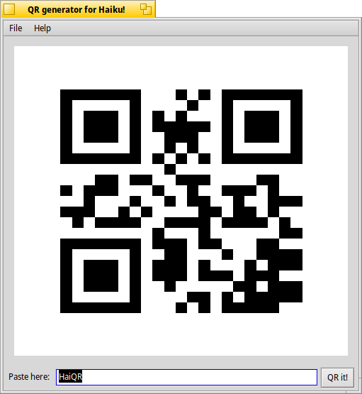

QR it!
Topics
|
A simple QR generator for HaikuAug 12, 2021 by Fabio Tomat aka TmTFx This little piece of code
written in python is a simple frontend that lets you generate QRs
in Haiku and BeOS. The code is released under GNU GPL v3 license: This program is free software: you can redistribute it and/or modify
it under the terms of the GNU General Public License as published by
the Free Software Foundation, either version 3 of the License, or
(at your option) any later version.
This program is distributed in the hope that it will be useful,
but WITHOUT ANY WARRANTY; without even the implied warranty of
MERCHANTABILITY or FITNESS FOR A PARTICULAR PURPOSE. See the
GNU General Public License for more details.
You should have received a copy of the GNU General Public License
along with this program. If not, see <http://www.gnu.org/licenses/>.

|